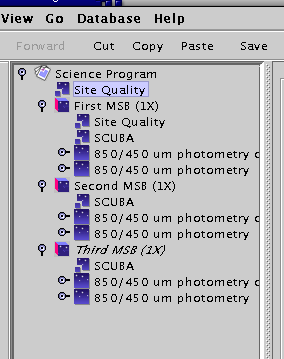
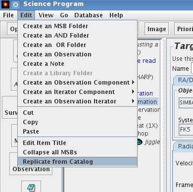
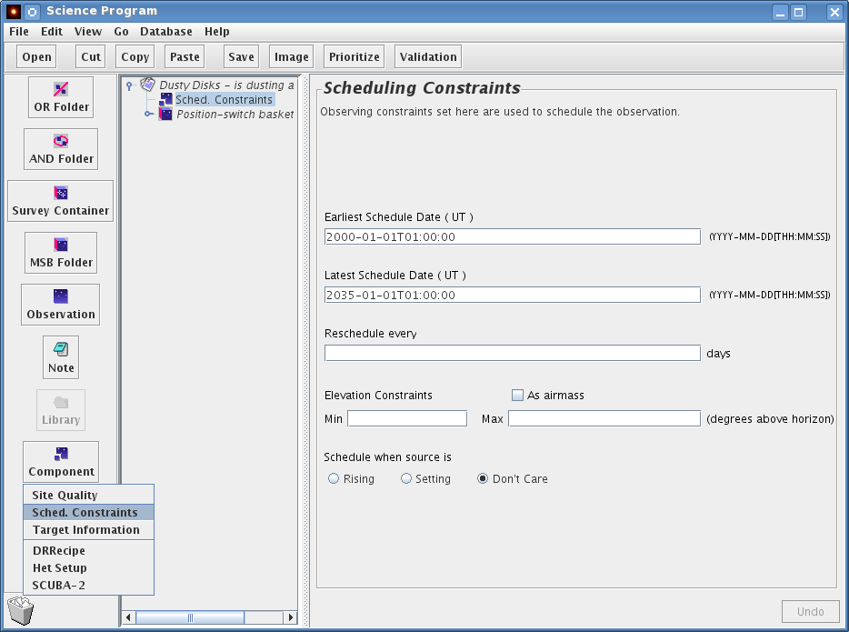
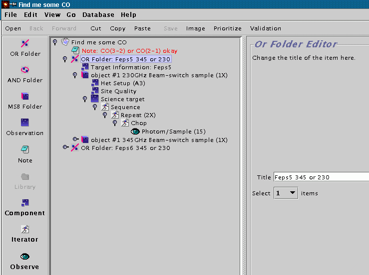
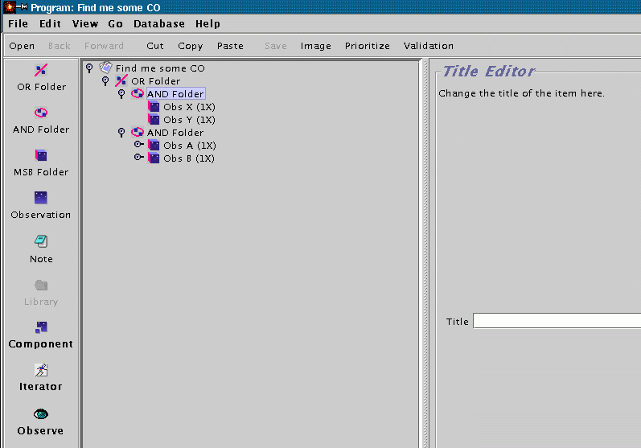
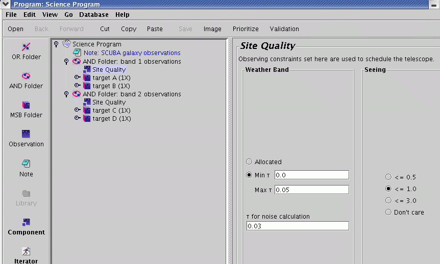

So far we have described preparation using the library sequence "as is". This section covers some topics of interest to anyone wishing to manipulate or add to the standard library sequences in order to create some of the less common observing modes that are sometimes required. It assumes that you are familiar with the material presented in the main part of the tutorial.
As you may have gathered by now, the Science Program is a tree structure and the placement of elements in that structure has a lot of significance.
For example, look at the example below of a Science Program containing three MSBs — focus on the location of the two Site Quality components:

What does this mean? The first Site Quality component is on the same level of indentation, and therefore the same level of branching, as the MSBs. If that was the only Site Quality component present it would apply to all MSBs in the Science Program. As it is, the first MSB has a site quality inside it (technically: within its scope). So the first MSB will be scheduled using the criteria of the Site Quality component inside it, and the second and third MSBs will use the first Site Quality component since they lack one of their own. The technical term for this behaviour is "inheritance" for those familiar with it already.
Common uses for inheritance are e.g. to place the Het Setup outside the MSBs if you want to observe multiple sources at the same frequency. Conversely, the Target Component can be placed outside multiple MSBs are needed on the same target. However, carefully read the next item on the interaction of the Het. and Target component.
See the section on "AND and OR Folders" on how an AND folder can be used to group observations and use inheritance within that group.
If you have many sources which you wish to observe in a similar way and do not wish to go through the rigmarole of editing a target component for each one, there is a way to generate a science programme from a template MSB and a text (ASCII) catalog file. This uses a service at our site — you need an internet connection to do this.
Start with a science program which contains the template MSB that you wish to use for the replication, but LEAVE THE NAME AND COORDINATES IN THE TARGET COMPONENT BLANK (for example, a template MSB you have retrieved from the ACSIS library). Your catalog file should be of the format:
PKS0106 01 08 38.771 + 01 35 00.32 RJ 3C84 03 19 48.160 + 41 30 42.10 RJ 3C120 04 33 11.096 + 05 21 15.62 RJ PKS0438 04 40 17.180 - 43 33 08.60 RJ
The catalog format is not blank space sensitive — sourceplot and JCMT catalog files will work as is, provided they do not contain planets or objects with orbital elements.
Under the edit menu, there is an option called "Replicate from catalog". Choose this action:

A file selector window will pop up which allows you to choose the location of the catalog file. Once you have done this, the OT will contact our site and after a short delay will pop up a new science programme window containing multiple MSBs. So if you had an MSB with one blank target component and a catalog file with 12 sources, you will get back a science programme with 12 MSBs, whose target components have been filled in using the information from your catalog.
Of course you may have to tweak the MSBs further, such as giving them more informative titles and tweaking the number of integrations on each source. It is also not yet possible for the source replicator to insert source velocities from the catalog into the MSBs.
You can place additional scheduling constraints on some or all of your MSBs. To set up a scheduling constraint component for all your MSBs, return to your science programme component at the top, then click on "component" on the left icon bar as shown below. This will bring up a number of choices - select "Sched.Constraints". This will drop in a Scheduling Constraints component at the top of your programme, which will therefore apply to all MSBs. To make this apply to only a specific MSB, place the scheduling constraint inside it.

The scheduling constraints component allows you to:
Specify a specific time window in which you want your observations to be taken. Needless to say setting this too narrowly will reduce your chances of being scheduled, so only do this if there is a valid scientific reason
Set a rescheduling action, that will schedule an MSB that has been completed to reappear after a certain number of days. If you have been allocated time for a project that requires periodic monitoring, you may wish to ask us for more information on how this works.
By default, a target is considered observable if it is between 30 and 88 degrees of elevation for the entire duration of its MSB. If you wish to specify a lower elevation criterion (eg. for a very low or very high declination source) you may do so here.
Restrict a target to being observed only before or after transit. Again, note that this criterion will be applied for the entire estimated duration of the MSB, so only do this if it is scientifically vital.
The Scheduling Constraints component allows one to restrict or broaden the time over which an MSB will be selected. To insert this component, click on the Component button on the left side near the bottom of the OT window, and select the "Sched. Constraints".
The main reason you might want to insert this component is if your science targets have a very low or very high declination (i.e. δ < ~-35o or δ > ~+80o). By default, MSBs are only selected when the sources are above about 30o elevation, so low- and high- declination sources may never be selected unless you specify a lower minimum elevation. Similarly, sources at ~19o declination transit almost directly overhead, and you may wish to restrict such sources to be selected when they're not at extremely high elevations.
Another reason to insert this component is if your observations are time-critical, i.e. they must not be done before a certain date or after a certain date. This can be specified by changing the Earliest and/or Latest Schedule Date.
You may also need to use this component if you have a project which requires periodic observations, for example if you were monitoring a variable source. In that case, you can specify the repeat time in the "Reschedule every..." box. The MSB will be reactivated at the appropriate time.
Within a science program, you can use OR and AND folders to group your MSBs. These folders can be very useful for organising and managing your observing programme as the semester progresses. Especially note the comment below on an "alternative" use for an AND folder to avoid having to reproduce information that is common to several MSBs.
An OR folder can contain N items, and you can set the "Select" counter on the OR folder to indicate that you'd like any subset of size M to be observed. For example, if you wanted to try to detect the CO line in an object, but were not concerned in which transition (either 3-2 or 2-1), one could use a top level OR folder which contained a target information component and two MSBs as shown below. The user should set the "Select" counter of the OR folder to 1 to indicate that just 1 of the MSBs should be executed (not both).

Another application of OR folders is managing available telescope time for projects with a large number of potential targets. Suppose an observer wants to observe from a sample of 40 potential targets. Further suppose that some of the objects will require follow up observations towards the end of a semester and telescope time is somewhat limited (i.e. not enough to observe them all once and follow up the interesting ones). One solution would be to put the 40 MSBs for the sample into an OR folder, then set the "select" switch to, say, 10 objects. This will mean that no more than 10 objects will be observed from the sample. This can be used to ensure that all of the telescope does not get used up in making first observations, and that some time will be left over for follow up observations. This kind of programme management can involve the observer, in conjunction with the support astronomer, dynamically altering the programme in the light of past observations, results of data reduction and available telescope time.
An AND folder does not influence the availability of its contents, as an OR folder can, once an MSB inside it has been observed. Instead, they simply enable observations to be grouped together. In the example below, AND folders are used to indicate that the observer would prefer to end up with observations A and B or X and Y rather than A and X and A and Y. The order of observations, and which get done, will still depend only on project priority, source availability and weather. If the observer absolutely needs two targets observed to get any meaningful scientific result, they should go in the same MSB rather than in an AND folder - do not forget MSBs are allowed to contain multiple targets.

An alternative use for an AND folder is to avoid having to reproduce information that is common to several MSBs - the site quality, Target info, and/or Het Setup for example. An individual component can be pulled out of the MSBs and set into the hierarchy at the AND folder level. In the following example, we have been allocated both bands 1 and 2 for our project; however, because of differences in their expected fluxes we want to observe targets A and B in band 1 and targets C and D in band 2.

The survey container is an extremely useful tool when you want to carry out the same type of observations of a large number of sources. It works similar to the replication example above, but it does not replicate the MSBs in the OT, only in the database. I.e. a single observation for a target list with 100 sources will have 1 MSB in the OT, but 100 MSBs in the database after uploading your science program.
However the meaning of MSB remains the same: the whole of the MSB must be doable for it to come up in the queue. Corollary: it is a Bad Idea to include targets over a wide range of RA in one survey container.
Here is what you see when you click on the Container itself:

To manually add and remove positions, use "Add" and "Remove" buttons at the bottom of the panel. Here is a completed container:

Note the "Target Information" Tab. Each target has its own target info, in a format identical to the familiar Target Component:

On the Survey Targets tab, there is a "load" button. This allows you, if you're not using the SDT to populate your Container, to upload a set of targets from a text file in the following format (slightly different from the format for MSB cloning):
SURVEYID = Test SCIENCE BGPS3097 18:34:12.03 -08:22:57.3 FK5 REFERENCE GD2 18:31:12.06 -07:59:05.2 FK5 SCIENCE BGPS3100 18:34:19.16 -08:23:27.9 FK5 REFERENCE GD2 18:31:12.06 -07:59:05.2 FK5 : etc.
The first line is the Survey ID, which will become the title of the survey container. This is prefixed to every supplied target name as follows:

(So it is best to keep it short!)
If your host is behind a firewall, you may need to use a proxy server to access remote catalogs via HTTP. This can be achieved by selecting "preferences" from the OT "File" menu and then selecting the Proxy server tab. You may then enter the name and port of your proxy server.